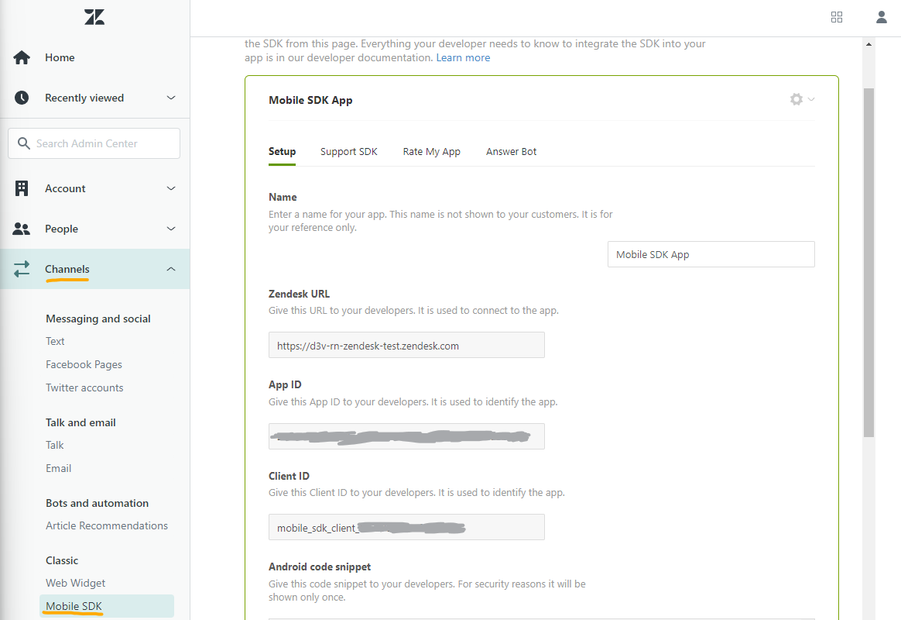
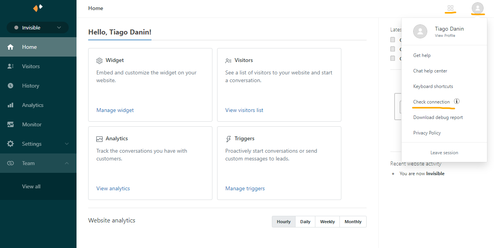
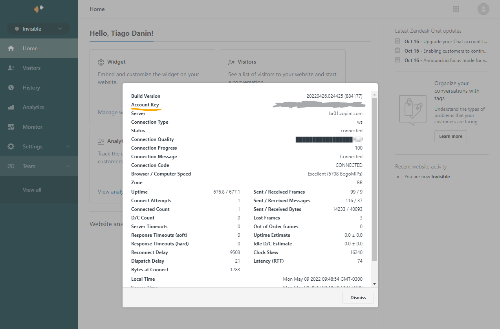

Supported Zendesk Features
Module available through the npm registry. It can be installed using the npm or yarn command line tool.
# Yarn (Recommended)
yarn add @idopterlabs/rn-zendesk
# NPM
npm install @idopterlabs/rn-zendesk --save
Configuring Zendesk to work with @idopterlabs/rn-zendesk.
First create an access for your app in Admin Panel >> Channels >> Mobile SDK >> Add App and copy access credentials:

You need to get the account key in Admin Panel >> Zendesk Products (Button found at top right) >> Chat >> Profile Picture >> Check connection:


First you must obtain the access settings and set via .init(...). After that you can use the zendesk features.
Zendesk Chat
.startChat(...): Open the chatZendesk Support
.startTicket(): Open the ticket form.showTicketList(): Open the page with all user ticketsZendesk Help Center
.showHelpCenter(): Open the help centerZendesk Analytics
.setVisitorInfo(...): Save information about who is using the appYou must set up in your app's Android Manifest (android/src/main/AndroidManifest.xml) the activities with the desired style:
<manifest xmlns:android="http://schemas.android.com/apk/res/android"
xmlns:tools="http://schemas.android.com/tools"
package="com.example">
<application
android:name=".MainApplication"
android:icon="@mipmap/ic_launcher"
android:label="@string/app_name">
<activity
android:name=".MainActivity"
android:configChanges="keyboard|keyboardHidden|orientation|screenSize|uiMode"
android:exported="true"
android:label="@string/app_name"
android:launchMode="singleTask"
android:windowSoftInputMode="adjustResize">
<intent-filter>
<action android:name="android.intent.action.MAIN" />
<category android:name="android.intent.category.LAUNCHER" />
</intent-filter>
</activity>
<!-- ... -->
+ <activity
+ android:name="zendesk.support.guide.HelpCenterActivity"
+ android:theme="@style/ZendeskActivityTheme" />
+
+ <activity
+ android:name="zendesk.support.guide.ViewArticleActivity"
+ android:theme="@style/ZendeskActivityTheme" />
+
+ <activity
+ android:name="zendesk.support.request.RequestActivity"
+ android:theme="@style/ZendeskActivityTheme" />
+
+ <activity
+ android:name="zendesk.support.requestlist.RequestListActivity"
+ android:theme="@style/ZendeskActivityTheme" />
+
+ <activity
+ android:name="zendesk.messaging.MessagingActivity"
+ android:theme="@style/ZendeskActivityTheme" />
</application>
</manifest>
And create the style in android/src/main/res/values/styles.xml:
<resources xmlns:tools="http://schemas.android.com/tools">
<!-- ... -->
+ <style name="ZendeskActivityTheme" parent="ZendeskSdkTheme.Light">
+ <item name="android:windowBackground">@color/windowBackground</item>
+ <item name="android:textColor">@color/secondaryTextColor</item>
+ <item name="android:textColorPrimary">@color/secondaryTextColor</item>
+ <item name="android:statusBarColor">@color/primaryDarkColor</item>
+ <item name="colorPrimary">@color/primaryColor</item>
+ <item name="colorPrimaryDark">@color/primaryDarkColor</item>
+ <item name="colorAccent">@color/secondaryColor</item>
+ <item name="android:windowLightStatusBar" tools:targetApi="m">false</item>
+ </style>
</resources>
On iOS set the preferred color via the method .setPrimaryColor(...)